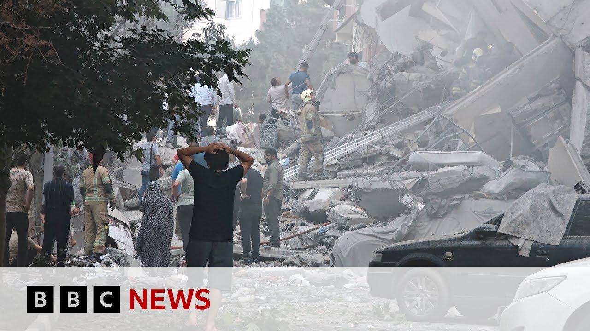

【美国向中东派遣军事力量，以色列与伊朗冲突升级 | BBC新闻】
Summary: The US is deploying military assets, including aircraft carriers and strike fighters, to the Middle East amid escalating tensions between Israel and Iran, while experts warn of the risks of regime change strategies.
摘要： 美国正向中东部署包括航空母舰和战斗机在内的军事力量，以应对以色列与伊朗之间不断升级的紧张局势，专家警告政权更迭策略的风险。

⏱️ Estimated Reading Time: 11 min
📚 六级生词 📚 雅思生词 📚 托福生词 📚 专八生词 📚 SAT生词 📚 考研生词 📚 GRE生词 📚 高考生词
You're gambling with World War II.
你这是在用第二次世界大战做赌注。
As a military strategic planner, a former planet, you don't want politicians telegraphing what your next moves are going to be.
作为一名军事战略规划者，前星球，你不希望政客们透露你的下一步行动。
The US will take over the Gaza Strip and we will do a job with it, too.
美国将接管加沙地带，我们也会参与其中。
A peacekeeping force does not exist with a ceasefire.
停火并不意味着维和部队的存在。
Hello, this is the security brief here on BBC News.
大家好，这里是BBC新闻的安全简报。
And in the program, the conflict between Israel and Iran continues to escalate with air raid sirens blaring across cities inside both countries.
在本期节目中，以色列与伊朗的冲突持续升级，两国城市上空响起空袭警报。
President Donald Trump calls for residents in Tehran to evacuate.
唐纳德·特朗普总统呼吁德黑兰居民撤离。
The United States is also sending its military might to the Middle East with a second aircraft carrier on its way to the Arabian Sea along with five destroyers.
美国还向中东派遣军事力量，第二艘航空母舰正与五艘驱逐舰一同前往阿拉伯海。
But what stage of the conflict do we find ourselves in?
但我们目前处于冲突的哪个阶段？
That's the question.
这就是问题所在。
And where might it all be heading?
这一切又将走向何方？
With me to discuss as ever is former senior officer and assault helicopter pilot in the British military, Mikey Kay.
与我一起讨论的依然是英国军队前高级军官兼攻击直升机飞行员，迈基·凯。
And as always, Mikey will deliver his brief as he would to his generals.
一如既往，迈基将像向将军们汇报一样进行简报。
The big question I guess everyone is asking, where does this conflict go next?
我想大家都在问的一个大问题是，这场冲突接下来会如何发展？
Yeah, there's some significant developments today in terms of tracking very large movements of uh US air assets.
是的，今天在追踪美国空军资产的大规模调动方面有一些重大进展。
Um particularly the what's called a KC 135.
特别是所谓的KC-135。
Uh let's go slide.
我们来看一下幻灯片。
Um this is a KC135.
这是一架KC-135。
It's a tanker aircraft, so it's used to refuel fast jets, for example, heading onto a target.
这是一架加油机，用于为快速喷气机加油，例如飞向目标的战机。
Um, you can see on the back, or you could see on the back as it was taxing out, there's the big boom on the back, which is used to plug into um into the jets.
你可以看到它的尾部，或者在滑行时可以看到尾部的大吊杆，用于与喷气机对接。
Now, what's what's significant about this is is that these aircraft are trackable um and are likely refueling US strike aircraft such as the F-35 fifth generation fighter, the F-15, and possibly the F-22 Raptor, which is probably one of the most advanced air defense fighters uh in the world, which belongs to the US.
现在，重要的是这些飞机是可追踪的，并且很可能正在为美国的攻击机加油，例如F-35第五代战斗机、F-15，以及可能是F-22猛禽，这是世界上最先进的防空战斗机之一，属于美国。
These won't be trackable, but by deduction, um the tankers are airborne.
这些攻击机不会被追踪到，但通过推断，加油机正在空中。
Um it's likely there is forward deployment of US strike aircraft being positioned into or near the Middle East.
很可能美国攻击机正在向前部署到中东或其附近。
So I'm certainly at the moment watching for movement of these fighters across locations such as RAF Laken Heath which is a US base in England or Rammstein in Germany.
因此，我现在肯定在关注这些战斗机在诸如英国的美军基地拉肯希思或德国的拉姆施泰因等地的调动。
Uh there's a US base that I was deployed to for 6 months in Avano in Italy which is about uh 2 hours north of Venice and then RAF Akiteri in Cyprus as well.
还有一个美军基地，我曾被部署到意大利的阿维亚诺六个月，那里大约在威尼斯以北两小时车程的地方，还有塞浦路斯的阿克罗蒂里皇家空军基地。
Um there's also movement of another US aircraft carrier towards the region the USS Nimmits.
还有另一艘美国航空母舰“尼米兹”号正在向该地区移动。
Let's take a look at the USS Limits.
我们来看一下“尼米兹”号。
Um the USS Nimits was located in the South China Sea but is now tracking westwards uh citing operational commitments and the Nimttz will join the USS Carl Vincent that has been on operations in the Red Sea striking Houthy targets in Yemen.
“尼米兹”号此前位于南海，但现在正向西移动，理由是作战任务，它将与一直在红海打击也门胡塞目标的“卡尔·文森”号会合。
So lots of American military movement.
所以美军有很多调动。
We can see that.
我们可以看到这一点。
What do you think is the US strategy behind all of that?
你认为美国这一切背后的战略是什么？
Yeah, I mean I if I was to sort of pick two major reasons.
是的，如果要我选出两个主要原因。
Um it's for sure absolutely sending uh a message to Iran that the US is is putting massive capability into the region as a as a show of overwhelming force.
这绝对是在向伊朗传递一个信息，即美国正在向该地区投入大量力量，以展示压倒性的武力。
Um usually it would be an aircraft carrier, you know, that's a real power projection, but the fact that they're going to have two aircraft carriers in the region as well as major landbased strike assets, aircraft, you know, this is this is significant.
通常一艘航空母舰就足以展示力量投射，但他们将在该地区部署两艘航空母舰以及主要的陆基攻击资产和飞机，这非常重要。
Um, and I think it's a it's a method of attempted coercion um to get Iran to the negotiating table.
我认为这是一种试图胁迫伊朗回到谈判桌的方法。
But, you know, you may ask how success is that going at the moment?
但你可能会问，目前这一策略有多成功？
Well, Iran have already pulled out of the negotiations uh which were approaching their fifth or sixth round, I believe.
嗯，伊朗已经退出了谈判，我相信谈判已经进行到第五或第六轮了。
So, you know, it's a it's a big gamble and whether it will work or not, whether it will deescalate or not and bring people to the table, I think, is um the big question that's up for grabs.
所以，这是一场大赌注，它是否会奏效，是否会缓和局势并让人们回到谈判桌，我认为这是一个悬而未决的大问题。
Last question, Mikey.
最后一个问题，迈基。
I guess it's a broader one.
我想这是一个更广泛的问题。
It's where is all this going?
这一切将走向何方？
There's a lot of rhetoric about Israel wanting regime change in Iran, Donald Trump maybe getting America more directly involved with those bunker busting bombs that you mentioned.
有很多言论称以色列希望伊朗政权更迭，唐纳德·特朗普可能会让美国更直接地参与你提到的那些掩体炸弹行动。
Where is where is this heading, do you think?
你认为这一切将走向何方？
Yeah.
是的。
Um, we often talk on this program about uh courses of action.
我们经常在这个节目中讨论行动方案。
That's a a military strategic planning um term for options that are are worked out by military teams that build out what what a potential course of action could be.
这是军事战略规划中的一个术语，指的是军事团队制定的潜在行动方案。
And there could be numbers of them.
可能有多个方案。
You know, a most likely course of action or a most dangerous course of action.
比如最可能的行动方案或最危险的行动方案。
Um these could range from cutting the head off a snake, for example, going directly after um the Ayatollah.
这些方案可能包括“斩首行动”，例如直接针对阿亚图拉。
You know, Trump, for example, posted on Truth Social.
例如，特朗普在Truth Social上发帖。
We can go slide and look at um look at his post.
我们可以看一下他的帖子。
He said, "We know exactly where the so-called supreme leader is hiding.
他说：“我们确切地知道所谓的最高领袖藏在哪里。
He is an easy target, but is safe there.
他是一个容易的目标，但在那里很安全。
We are not going to take him out.
我们不会干掉他。
Brackets kill."
括号内写着‘杀’。”
That's a message in terms of what one of the potential courses of action might be.
这传递了一个信息，即可能的行动方案之一是什么。
But then you you spoke about regime change, right?
但你提到了政权更迭，对吧？
That's a bigger operation to try to affect regime change.
这是一个更大的行动，试图实现政权更迭。
Now, this is really important and having had direct experience in Iraq over this.
这一点非常重要，我在伊拉克有直接经验。
This is a very dangerous strategy that has proved catastrophic in the past.
这是一个非常危险的策略，过去已被证明是灾难性的。
Let's take Iraq for example.
以伊拉克为例。
Served on three tours, know the know the operation very well, right from its inception in 2003 all the way to to to flying operations over Baghdad in 2008.
我曾三次服役，非常了解这一行动，从2003年开始一直到2008年在巴格达上空的飞行行动。
And this is really important.
这一点非常重要。
If you take out a regime like they did with Saddam, you take out the security apparatus.
如果你像他们对待萨达姆那样推翻一个政权，你就摧毁了安全机构。
And if that security apparatus isn't filled with a military force or a police force, you then get a security vacuum, which is exactly what we saw.
如果这个安全机构没有被军队或警察填补，你就会出现安全真空，这正是我们所看到的。
The consequence of this in Iraq was al-Qaeda in Iraq.
这在伊拉克的后果是基地组织在伊拉克的出现。
Um also's um uh terrorist outfit.
还有恐怖组织。
They were allowed to thrive.
它们得以蓬勃发展。
They then morphed into Islamic State in Iraq, which then which then morphed into Islamic State in Iraq and Syria.
它们随后演变为伊拉克的伊斯兰国，然后又演变为伊拉克和叙利亚的伊斯兰国。
and excuse me and it you know the whole thing the whole security vacuum just was a complete disaster.
抱歉，整个安全真空完全是一场灾难。
You then have Iranianbacked militias the popular popular mobilization forces they were allowed to thrive.
然后你还有伊朗支持的民兵组织，人民动员部队，它们得以壮大。
So you know the big thing for me is is Iran Iran is around four times the size of Iraq and you pursue a strategy of regime change and there's rhetoric coming out of the US on it already.
所以对我来说，重要的是伊朗的面积大约是伊拉克的四倍，而你追求政权更迭的策略，美国已经对此发表了言论。
You create a way bigger problem than you ever did in Iraq.
你会制造一个比在伊拉克更大的问题。
And I and I think, you know, we really need to look at history and how well that went in order to sort of, you know, sit up and really really focus on whether you want to do this because I would absolutely advise Start.
我认为，我们真的需要看看历史以及那一切是如何发展的，以便真正认真考虑是否要这样做，因为我绝对会建议谨慎行事。